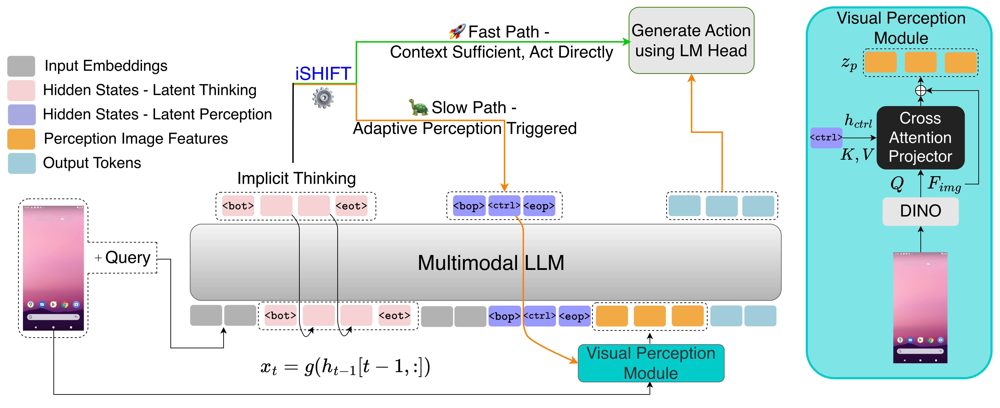

Multimodal Large Language Models (MLLMs) show strong potential for interpreting and interacting with complex, pixel-rich Graphical User Interface (GUI) environments. However, building agents that are both efficient for high-level tasks and precise for fine-grained interactions remains challenging. GUI agents must perform routine actions efficiently while also handling tasks that demand exact visual grounding, yet existing approaches struggle when accuracy depends on identifying specific interface elements. These MLLMs also remain large and cannot adapt their reasoning depth to the task at hand.
In this work, we introduce iSHIFT: Implicit Slow-fast Hybrid Inference with Flexible Tokens, a lightweight agent that integrates latent thinking (implicit chain-of-thought) with a perception control module. iSHIFT enables an MLLM to switch between a slow mode, which leverages detailed visual grounding for high precision, and a fast mode that uses global cues for efficiency. Special perception tokens guide attention to relevant screen regions, allowing the model to decide both how to reason and where to focus. Despite its compact 2.5B size, iSHIFT matches state-of-the-art performance on multiple benchmark datasets.

Enable implicit, non-verbal deliberation without explicit language generation. The model reasons internally via special <bot>...<eot> tokens before producing an action.
Special tokens <bop>, <ctrl>, <eop> signal when to activate the Visual Perception Module for fine-grained grounding of specific UI elements.
A frozen DINOv2-Large encoder with cross-attention projection provides high-resolution, object-centered features when the slow path is activated.
Action Matching Score. Best scores in <5B are bolded. Overall best are underlined. Green = SOTA parity (within 2.0 pts of column max).
| Method | Base Model | Size | Vision Only | General | Install | Google Apps | Single | WebShop | Avg. |
|---|---|---|---|---|---|---|---|---|---|
| Models with parameter count above 5B | |||||||||
| LLaMa 2 (arxiv'23) | LLaMa 2 | 7B | ✗ | 28.56 | 35.18 | 30.99 | 27.35 | 19.92 | 28.40 |
| CoCo-Agent (arxiv'24) | LLaMa 2 | 7B | ✗ | 69.92 | 80.60 | 75.76 | 88.81 | 74.02 | 77.82 |
| MobileAgent (ICLR'24 w) | LLaMa | 7B | ✗ | 55.80 | 74.98 | 63.95 | 76.27 | 63.61 | 66.92 |
| GPT-4o (arxiv'24) | -- | -- | ✓ | 47.06 | 49.12 | 52.30 | 80.28 | 46.42 | 55.02 |
| OmniParser (arxiv'24) | -- | -- | ✓ | 48.30 | 57.80 | 51.60 | 77.40 | 52.90 | 57.60 |
| CogAgent (CVPR'24) | Vicuna 7B | 18B | ✓ | 65.38 | 78.86 | 74.95 | 93.49 | 71.73 | 76.88 |
| SeeClick (ACL'24) | QwenVL | 9.6B | ✓ | 67.60 | 79.60 | 75.90 | 84.60 | 73.10 | 76.16 |
| Mobile VLM (EMNLP'24) | QwenVL | 9.6B | ✓ | 69.58 | 79.87 | 74.72 | 81.24 | 71.70 | 75.42 |
| SphAgent (ACL'25) | InternLM | 7B | ✓ | 68.20 | 80.50 | 73.30 | 85.40 | 74.00 | 76.28 |
| TongUI (arxiv'25) | Qwen2.5 VL | 7B | ✓ | 67.60 | 76.30 | 73.50 | 79.90 | 69.10 | 73.30 |
| Models with parameter count below 5B | |||||||||
| AutoGUI (ACL'24) | T5 + ViT | 4.5B | ✓ | 68.24 | 76.89 | 71.37 | 84.58 | 70.26 | 74.27 |
| Qwen2 VL (arxiv'24) | Qwen2 VL | 2B | ✓ | 61.40 | 71.80 | 62.60 | 73.70 | 66.70 | 67.24 |
| ShowUI (CVPR'25) | Qwen2 VL | 2B | ✓ | 63.90 | 72.50 | 69.70 | 77.50 | 66.60 | 70.04 |
| TongUI (arxiv'25) | Qwen2.5 VL | 3B | ✓ | 65.60 | 75.10 | 74.50 | 77.00 | 65.80 | 71.60 |
| iSHIFT (Ours) | Qwen2 VL | 2.5B | ✓ | 70.60 | 80.82 | 71.64 | 86.03 | 72.60 | 76.34 |
@misc{mehrotra2025ishiftlightweightslowfastgui,
title={iSHIFT: Lightweight Slow-Fast GUI Agent with Adaptive Perception},
author={Sarthak Mehrotra and Sairam V C Rebbapragada and Mani Hemanth Reddy Bonthu and Vineeth N Balasubramanian},
year={2025},
eprint={2512.22009},
archivePrefix={arXiv},
primaryClass={cs.CV},
url={https://arxiv.org/abs/2512.22009},
}